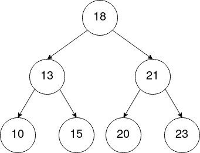
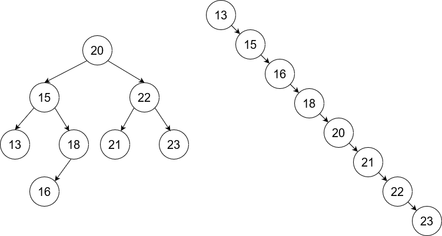

Exercices - Arbres binaires de recherche
Voici 3 arbres binaires :

Exercice 1
- Parmi ces arbres, pouvez-vous dire lesquels sont des arbres binaires de recherche ?
- Dans un arbre binaire de recherche, où se trouve le plus petit élément ? Le plus grand élément ?
- Quelle est l'ordre des noeuds lors des parcours préfixe, infixe, postfixe du premier arbre ?
- Quel parcours est particulièrement intéressant avec les arbres binaire de recherche ? Pourquoi ?
- Comment vérifier facilement si un arbre binaire est un arbre binaire de recherche ?
Correction exercice 1
- Les trois arbres sont des arbres binaires de recherche (voir définition).
- Pour trouver le plus petit élément d'un arbre binaire de recherche, on procède comme suit : Si l'arbre n'a pas de sous-arbre gauche, son minimum est alors la valeur de sa racine. Sinon, il s'agit du minimum (récursivement) de son sous-arbre gauche. Pour le maximum, c'est le même principe mais avec le sous-arbre droit.
- préfixe : [8, 5, 3, 6, 10, 9, 12]
postfixe : [3, 6, 5, 9, 12, 10, 8]
infixe : [3, 5, 6, 8, 9, 10, 12] - Les valeurs des nœuds visités en ordre infixe sont dans l'ordre croissant.
- On peut donc facilement vérifier qu'un arbre binaire est un arbre binaire de recherche en parcourant ses nœuds dans l'ordre infixe et en vérifiant si les valeurs de ces nœuds sont triées dans l'ordre croissant.
Exercice 2
Créez un arbre binaire de recherche en partant d'un arbre binaire vide et en insérant progressivement les nœuds de valeurs suivantes (en suivant cet ordre) : 18, 13, 21, 20, 15, 10, 23.
Correction exercice 2
Pour dessiner cet arbre, il faut partir d'un arbre binaire vide puis insérer chaque valeur une par une. Pour insérer une valeur, il faut comparer cette valeur avec la valeur racine de l'arbre, puis insérer dans le sous-arbre gauche si la valeur est inférieur ou égale à la valeur racine, et à droite sinon (en procédant de manière récursive). On s'arrête lorsqu'on arrive sur un arbre vide, auquel cas cet arbre vide devient une feuille contenant la valeur à insérer.
Voici l'arbre obtenu :

Exercice 3
Dessinez un arbre binaire de recherche :
- En insérant, en suivant l'ordre, les nœuds de valeurs suivantes dans l'arbre : 14,13,12,11,8,5,4,3,1
Que constatez-vous ? À quelle autre structure de données cet arbre s'apparente t-il ? - Re-dessinez cet arbre de manière à obtenir un arbre équilibré.
- Si on insère progressivement chaque valeur une par une dans l'arbre, dans quel ordre faut-il les ajouter pour obtenir un arbre équilibré ? Décrivez votre méthode.
Correction exercice 3
À venir...
Exercice 4
- Décrivez, en pseudo-langage, un algorithme récursif de recherche dans un arbre binaire de recherche, qui renvoie
Vraisi un élément fourni en entrée est présent dans l'arbre, etFauxs'il ne l'est pas. -
Dessinez deux arbres binaires de recherche, construits en partant d'un arbre vide et en insérant progressivement les nœuds suivants :
- 20, 15, 22, 18, 21, 16, 23, 13
- 13, 15, 16, 18, 20, 21, 22, 23
-
Que pouvez-vous dire du premier arbre ? Du second ?
-
Déroulez votre algorithme sur les deux arbres précédemment dessinés, puis comptez le nombre d'appels récursifs pour rechercher :
- la valeur 17 dans le premier arbre
- la valeur 25 dans le deuxième arbre
-
Choisissez ainsi le bon coût algorithmique dans le tableau ci-dessous dans le pire cas :
| O(1) | O(\(log_2{n}\)) | O(n) | O(\(nlog_2{n}\)) | O(n²) | |
|---|---|---|---|---|---|
| ABR équilibré | |||||
| ABR non équilibré |
Correction exercice 4
1 .
ALGO : rechercher
ENTREES : abr : Arbre binaire de recherche
elt : Element
SORTIE : Booléen
DEBUT
Si abr EST VIDE, alors :
Renvoyer FAUX
Sinon si valeur_racine(abr) = elt, alors :
Renvoyer VRAI
Sinon si elt <= valeur_racine(abr), alors :
Renvoyer rechercher(gauche(abr), elt)
Sinon :
Renvoyer rechercher(droite(abr), elt)
2 .

3 .
Le premier arbre est équilibré (pour chaque nœud, la hauteur entre le sous-arbre gauche et droit ne diffère pas de plus de 1.)
Le deuxième arbre est un arbre filiforme, il n'est donc pas du tout équilibré (complètement déséquilibré).
4 .
Pour mieux comprendre, on notera abr_20 pour indiquer qu'il s'agit de l'arbre de valeur racine égale à 20, abr_15 pour l'arbre de valeur racine égale à 15, etc.
rechercher(abr_20, 16):
arbre NON VIDE
elt != valeur_racine(abr_20)
17 < 20 donc:
renvoyer rechercher(abr_15, 16):
17 > 15 donc :
renvoyer rechercher(abr_18, 16):
17 < 18 donc :
renvoyer rechercher(abr_16, 16):
17 > 16 donc :
renvoyer rechercher(abr_VIDE, 16):
arbre EST VIDE donc :
renvoyer FAUX
rechercher: 5
Si l'on note \(A(n)\) le nombre d'appels à rechercher dans le pire des cas en fonction de la taille \(n\) de l'arbre, on peut écrire :
\(A(0) = 1\) (si l'arbre est vide, on compte un seul appel à rechercher)
\(A(n) = 1 + A(\frac{n}{2}) = 1 + 1 + A(\frac{n}{4}) = [...] = \lfloor log_2(n) \rfloor + 2 \approx log_2(n)\)
Exemple pour \(n = 8\) : \(A(8) = log_2(8) + 2 = 3 + 2 = 5\) appels.
Le nombre d'appels récursifs correspond à peu près au nombre de fois que l'on peut diviser \(n\) par \(2\). La complexité est donc logarithmique.
rechercher(abr_13, 23):
arbre non vide
elt != valeur_racine(abr_13)
23 > 13 donc:
renvoyer rechercher(abr_15, 23):
23 > 15 donc :
renvoyer rechercher(abr_16, 23):
23 > 16 donc :
renvoyer rechercher(abr_18, 23):
23 > 18 donc :
renvoyer rechercher(abr_20, 23):
23 > 20 donc :
renvoyer rechercher(abr_21, 23):
23 > 21 donc :
renvoyer rechercher(abr_22, 23):
23 > 22 donc :
renvoyer rechercher(abr_23, 23):
25 > 23 donc :
rechercher(abr_VIDE, 23):
arbre EST VIDE donc :
renvoyer FAUX
rechercher: 9
Si l'on note \(A(n)\) le nombre d'appels à rechercher dans le pire des cas en fonction de la taille \(n\) de l'arbre, on peut écrire :
\(A(n) = n + 1 \approx n\).
Exemple pour \(n = 8\) : \(A(8) = 8 + 1 = 9\) appels.
Le nombre d'appels récursifs correspond à peu près à la taille (nombre de noeuds) de l'arbre. La complexité est donc linéaire.
5 .
On rappelle que la notation \(O\) (grand O) permet de définir un ordre de grandeur de la complexité algorithmique dans le pire des cas (on parle de borne asymptotique supérieure). Ici, on ne peut pas utiliser la notation \(\Theta\) car le coût dépend de l'élément recherché dans l'arbre, et peut donc varier pour une même taille d'arbre.
| O(1) | O(\(log_2{n}\)) | O(n) | O(\(nlog_2{n}\)) | O(n²) | |
|---|---|---|---|---|---|
| ABR équilibré | X | ||||
| ABR non équilibré | X |
Exercice 5
- Décrivez, en pseudo-langage, un algorithme récursif d'insertion dans un arbre binaire de recherche qui renvoie un nouvel arbre dans lequel est ajouté un nœud dont la valeur est donnée en entrée.
-
Déroulez votre algorithme sur les deux arbres dessinés à la question précédente, puis, pour chacun, comptez le nombre d'appels récursifs effectués pour insérer :
- la valeur 17 dans le premier arbre
- la valeur 25 dans le deuxième arbre
-
Choisissez ainsi le bon coût algorithmique dans le tableau ci-dessous dans le pire cas :
| O(1) | O(\(log_2{n}\)) | O(n) | O(\(nlog_2{n}\)) | O(n²) | |
|---|---|---|---|---|---|
| ABR équilibré | |||||
| ABR non équilibré |
Correction exercice 5
1 .
ALGO : insertion
ENTREES : abr : Arbre binaire de recherche
elt : Element
SORTIE : Arbre binaire de recherche
DEBUT
Si abr EST VIDE, alors :
Renvoyer nouvel_ABR(valeur_racine(abr), ARBRE_VIDE, ARBRE_VIDE)
Sinon si elt <= valeur_racine(abr), alors :
Renvoyer nouvel_ABR(valeur_racine(abr), insertion(gauche(abr)), droite(abr))
Sinon :
Renvoyer nouvel_ABR(valeur_racine(abr), gauche(abr), insertion(droite(abr)))
Suite à venir...